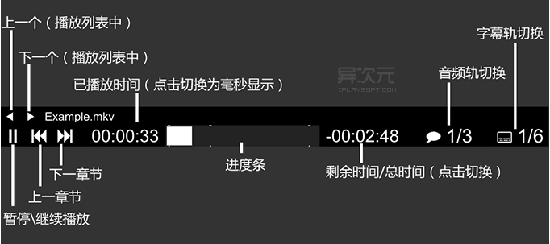
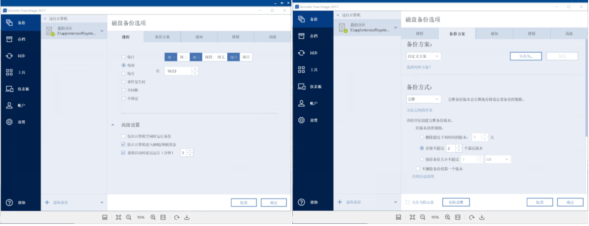
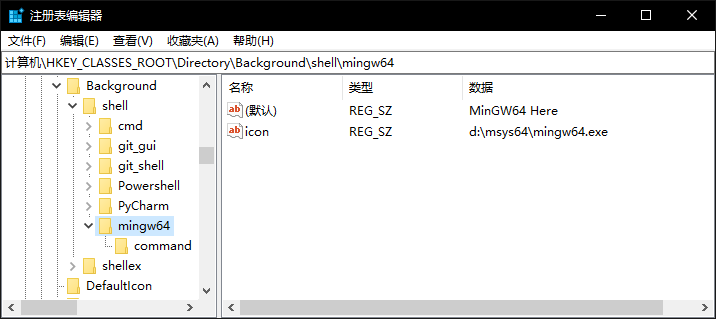
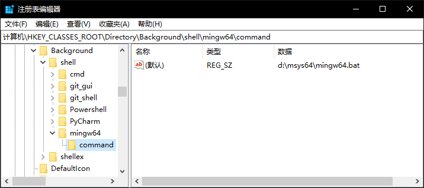
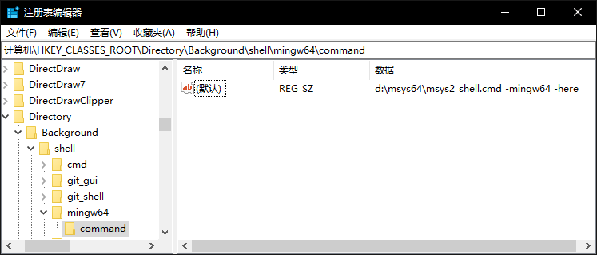
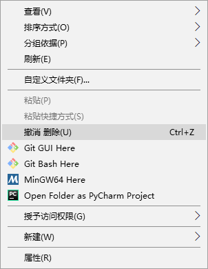
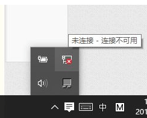
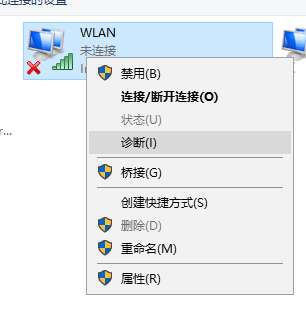
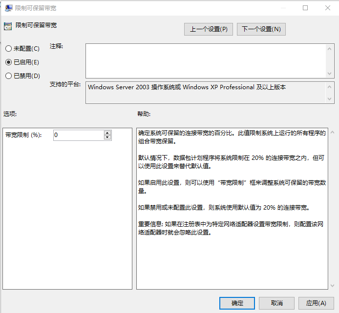

<!DOCTYPE html>
<html lang="en">
<head>
<meta charset="utf-8" />
<meta name="viewport" content="width=device-width, initial-scale=1" />
<title>Tools: 工具分享</title>
<meta name="description" content="Tools: 工具分享" />
<meta name="keywords" content="计算机, 职场, 网站, 英语, 五笔, 知识管理" />
<meta name="generator" content="Org Mode" />
<link rel="icon" href="/favicon.ico" type="image/x-icon">
<link rel="me" href="https://emacs.ch/@jasperhsu">
<meta name="google-adsense-account" content="ca-pub-1741779893655624">
<script async src="https://pagead2.googlesyndication.com/pagead/js/adsbygoogle.js?client=ca-pub-1741779893655624" crossorigin="anonymous"></script>
<!-- from -->
<!--
<style>#back-to-top{background:#000;-webkit-border-radius:50%;-moz-border-radius:50%;border-radius:50%;bottom:20px;-webkit-box-shadow:0 2px 5px 0 rgba(0,0,0,.26);-moz-box-shadow:0 2px 5px 0 rgba(0,0,0,.26);box-shadow:0 2px 5px 0 rgba(0,0,0,.26);color:#fff;cursor:pointer;display:block;height:56px;opacity:1;outline:0;position:fixed;right:20px;-webkit-tap-highlight-color:transparent;-webkit-touch-callout:none;-webkit-transition:bottom .2s,opacity .2s;-o-transition:bottom .2s,opacity .2s;-moz-transition:bottom .2s,opacity .2s;transition:bottom .2s,opacity .2s;-webkit-user-select:none;-moz-user-select:none;-ms-user-select:none;user-select:none;width:56px;z-index:1}#back-to-top svg{display:block;fill:currentColor;height:24px;margin:16px auto 0;width:24px}#back-to-top.hidden{bottom:-56px;opacity:0}</style>
-->
<link rel="stylesheet" href="/static/aandds.com/css/main.css">
<link rel="stylesheet" href="/static/aandds.com/css/drollery.min.css">
<script type="text/javascript" src="/static/aandds.com/js/main.js"></script>
<script>
  window.MathJax = {
    tex: {
      ams: {
        multlineWidth: '85%'
      },
      tags: 'ams',
      tagSide: 'right',
      tagIndent: '.8em'
    },
    chtml: {
      scale: 1.0,
      displayAlign: 'center',
      displayIndent: '0em'
    },
    svg: {
      scale: 1.0,
      displayAlign: 'center',
      displayIndent: '0em'
    },
    output: {
      font: 'mathjax-modern',
      displayOverflow: 'overflow'
    }
  };
</script>

<script
  id="MathJax-script"
  async
  src="https://cdn.jsdelivr.net/npm/mathjax@3/es5/tex-mml-chtml.js">
</script>
</head>
<body>
<div id="content" class="content">
<header>
<h1 class="title">Tools: 工具分享</h1>
</header><nav id="table-of-contents" role="doc-toc">
<h2>Table of Contents</h2>
<div id="text-table-of-contents" role="doc-toc">
<ul>
<li><a href="#h:61841338-60e8-4254-9cd8-39f360391f56">常用软件</a>
<ul>
<li><a href="#h:5AF3BE63-03BC-487F-8DC4-7CB9835DDD22">Windows</a></li>
<li><a href="#h:6ED1BAF0-D740-470F-9857-395B01962C2C">MacOS</a></li>
</ul>
</li>
<li><a href="#h:f25379a8-317f-4719-abbb-397557282c98">浏览器扩展</a></li>
<li><a href="#h:f5405c14-dcae-4f31-a1ad-8415bf878576">桌面设备</a></li>
<li><a href="#h:03ac986a-7911-4d93-ab11-3a44189b20e3">软件使用详解</a>
<ul>
<li><a href="#h:9D6718B7-889F-4B25-9FDD-5B4BA44668F9">sublime text</a></li>
<li><a href="#h:f1925bee-2edb-4eef-a831-5e34f1a51852">PDF文档编辑</a></li>
<li><a href="#h:b9229f4c-f60f-4aa2-9b30-5ac2106abe9f">视频转文案</a></li>
<li><a href="#h:768FA32C-714E-4A3D-B2FB-39EDDF030387">PotPlayer 播放器</a></li>
<li><a href="#h:1b6539bd-8978-4e73-8d38-d8a3d9209fef">MPV视频播放器</a>
<ul>
<li><a href="#h:7C23FBBF-88D6-4136-A033-469E78291880">mpv 使用</a></li>
<li><a href="#h:B56DC406-AFD4-4B4A-AE57-D221C34F3700">配置文件</a></li>
</ul>
</li>
<li><a href="#h:a5340789-8343-470f-ac9b-d1fc1a6ff78f">emacs 窗口透明</a></li>
<li><a href="#h:a091ab0c-2399-460a-a0a6-e30f5845e144">VSCODE插件</a></li>
<li><a href="#h:23f38cbf-5208-4f0a-acb2-faa0d292ce3f">OBS</a>
<ul>
<li><a href="#h:1a0e4347-b0e8-400c-a586-6951e03168ac">画面</a></li>
<li><a href="#h:ce5381ac-1a3f-492c-9c9f-26d520ccfb00">Mac 本地声音问题</a></li>
<li><a href="#h:4ca2fd2d-41ed-4a18-9cc0-48de04890001">不同场景防卡</a></li>
<li><a href="#h:d01f587a-73be-4ec7-b43c-8fffb99a3d85">视频压缩</a></li>
<li><a href="#h:0b34d36d-43b6-4d1b-87ef-c101d9150cec">OBS实现横屏、竖屏同时直播、录制</a></li>
</ul>
</li>
<li><a href="#h:64C32C06-F047-45AA-9586-D1EE14D167FD">Windows</a>
<ul>
<li><a href="#h:38BC57AD-4120-4BCD-B748-E447FCBFB3B8">常用操作</a></li>
<li><a href="#h:25fcc975-b705-4079-b334-c897fcdb3899">系统清理</a></li>
<li><a href="#h:97FCBAAD-73A2-4DBF-8C3A-131542A320C3">系统备份</a></li>
<li><a href="#h:09C332F7-72C1-4E7C-8677-58AF9BCAD792">win10安装MSYS2+MinGW64</a>
<ul>
<li><a href="#h:BCCB8AD2-B5E7-45F7-A6DB-EBDADAEBFE7B">Windows下添加msys2-MinGW到右键菜单</a></li>
</ul>
</li>
<li><a href="#h:1DA81570-1A24-48DE-9C0D-3A959C527AB9">常见问题</a>
<ul>
<li><a href="#h:28BCAD63-0E4B-4CE8-A807-7E18356E4DDA">WLAN图标不见了，上不了wifi</a></li>
<li><a href="#h:3B39E62C-8AC8-4177-9525-1A5DFA982793">解除网速限制</a></li>
</ul>
</li>
</ul>
</li>
<li><a href="#h:2ED48E65-83BC-4DCD-B35E-0D11A8550007">MacOS</a>
<ul>
<li><a href="#h:F7289164-D937-48B4-88EF-5842296BFDE4">常用操作</a></li>
<li><a href="#h:94D322ED-F74C-4C72-8CDD-F733FD325462">屏幕录制</a></li>
<li><a href="#h:9c5d2dbc-8909-405b-8289-b995eaf7fdcf">访达</a></li>
<li><a href="#h:10C44ED5-ACC8-4AFC-8074-4938AE713EFF">iterm2</a></li>
<li><a href="#h:02FC4720-7ABA-4A08-B288-E6A867420969">如何手动删除chrome浏览器中已储存输入框的文字记录</a></li>
<li><a href="#h:9BEBC685-FF78-44A6-9CCF-883D71C1570C">Brew安装</a></li>
</ul>
</li>
</ul>
</li>
<li><a href="#h:3dce5b3a-2cca-4f21-a236-e07a22705552">浏览器使用详解</a>
<ul>
<li><a href="#h:4b5dfb59-2d16-4854-8e76-f17868533d70">页面截图</a>
<ul>
<li><a href="#h:f95d32fb-c431-47ec-b880-f29444176e71">weasyprint 超大网页保存为 PDF</a></li>
</ul>
</li>
<li><a href="#h:eff1f9c0-2f34-4f00-905f-55ed0a7d7c40">Surfingkeys 像 vim 一样操作浏览器</a></li>
<li><a href="#h:7ee34ed8-c566-4440-891d-ca0cf8c8de1a">Tampermonkey 油猴脚本插件</a></li>
</ul>
</li>
</ul>
</div>
</nav>
<section id="outline-container-h:61841338-60e8-4254-9cd8-39f360391f56" class="outline-2">
<h2 id="h:61841338-60e8-4254-9cd8-39f360391f56">常用软件</h2>
<div class="outline-text-2" id="text-h:61841338-60e8-4254-9cd8-39f360391f56">
<ul class="org-ul">
<li>浏览器
<ul class="org-ul">
<li><a href="https://www.google.cn/intl/zh-cn/chrome/">chrome</a></li>
</ul></li>

<li>思维导图
<ul class="org-ul">
<li>mindmanager</li>
<li>mac: mindnode</li>
</ul></li>

<li>图片视频
<ul class="org-ul">
<li><a href="https://www.draw.io">edra</a>w 绘图</li>
<li>visol 绘图</li>
<li><a href="https://picpick.app">picpick</a> 截图</li>
<li><a href="https://www.snipaste.com">snipaste</a> 截图</li>
<li><a href="https://www.pointofix.de">Pointofix</a> 屏幕画笔</li>
<li><a href="https://mpv.io/">MPV</a> 轻量播放器</li>
<li><a href="https://potplayer.daum.net/?lang=zh_CN">PotPlayer</a> 播放器</li>
<li><a href="https://github.com/Hiram-Wong/ZyPlayer">zyplayer</a> 跨平台桌面端视频资源播放器</li>
</ul></li>
<li>模拟器
<ul class="org-ul">
<li><a href="https://www.ldmnq.com/">雷电模拟器</a></li>
<li><a href="https://mumu.163.com/">MuMu模拟器</a></li>
</ul></li>

<li>录屏相关：
<ul class="org-ul">
<li><a href="https://obsproject.com/">OBS</a></li>
<li>camtasia studio 录屏(1280*720像素)</li>
<li>oCam</li>
<li><a href="https://www.ieway.cn/">EV 录屏</a></li>
</ul></li>
<li>office工具
<ul class="org-ul">
<li>WPS</li>
</ul></li>
<li>markdown
<ul class="org-ul">
<li><a href="https://github.com/marktext/marktext">marktext</a></li>
<li>Typora 收费</li>
<li>MWeb 在mac下的 markdown</li>
<li>Ulysses 编写工具</li>
</ul></li>
<li>桌面分享
<ul class="org-ul">
<li>vnc server</li>
</ul></li>

<li>出版
<ul class="org-ul">
<li>Sphinx 文档工具 <a href="https://www.sphinx-doc.org/">https://www.sphinx-doc.org/</a></li>
<li>Graphviz <a href="https://www.graphviz.org/">https://www.graphviz.org/</a></li>
<li>leanpub（电子书籍出版平台） <a href="https://leanpub.com/">https://leanpub.com/</a></li>
</ul></li>
</ul>

<p>
<b>开发</b>
</p>

<ul class="org-ul">
<li>翻墙工具
<ul class="org-ul">
<li>lantern
<ul class="org-ul">
<li><a href="https://x.ishadowx.net/">https://x.ishadowx.net/</a></li>
<li><a href="https://abc.ss8.fun">https://abc.ss8.fun</a></li>
</ul></li>
</ul></li>

<li>ssh远程连接工具
<ul class="org-ul">
<li>CRT</li>
<li><a href="https://github.com/kingToolbox/WindTerm">windterm</a></li>
</ul></li>

<li>虚拟机创建
<ul class="org-ul">
<li>vmware</li>
<li>vitrualbox</li>
<li></li>
</ul></li>

<li>文本编辑器
<ul class="org-ul">
<li><a href="https://www.gnu.org/software/emacs/">Emacs</a></li>
<li>vim  neovim（vim改进）</li>
<li>sublime text</li>
<li>EmEditor文本编辑工具</li>
</ul></li>

<li>文件对比：
<ul class="org-ul">
<li><a href="https://www.scootersoftware.com/download/download">Beyond Compare</a></li>
<li><a href="https://winmerge.org/downloads/">WinMerge</a></li>
</ul></li>

<li>文本处理</li>

<li>远程开发：
<ul class="org-ul">
<li>Visual Studio Code Insiders</li>
</ul></li>

<li>切换hosts
<ul class="org-ul">
<li><a href="https://github.com/oldj/SwitchHosts/releases">SwitchHosts</a></li>
</ul></li>

<li>抓包软件
<ul class="org-ul">
<li><a href="https://www.tcpdump.org/">Tcpdump</a>(tcp/ip)</li>
<li><a href="https://www.wireshark.org/">Wireshark</a>(tcp/ip)</li>
<li><a href="https://portswigger.net/burp/releases">Burp Suite</a>(http)</li>
<li><a href="https://www.charlesproxy.com/">Charles</a>(http)</li>
<li><a href="https://www.telerik.com/fiddler">Fiddler</a>(http)</li>
</ul></li>

<li>调试软件
<ul class="org-ul">
<li><a href="https://www.postman.com/">Postman</a></li>
</ul></li>
</ul>
</div>
<div id="outline-container-h:5AF3BE63-03BC-487F-8DC4-7CB9835DDD22" class="outline-3">
<h3 id="h:5AF3BE63-03BC-487F-8DC4-7CB9835DDD22">Windows</h3>
<div class="outline-text-3" id="text-h:5AF3BE63-03BC-487F-8DC4-7CB9835DDD22">
<ul class="org-ul">
<li>磁盘备份
<ul class="org-ul">
<li><a href="https://github.com/Chuyu-Team/Dism-Multi-language">Dism++</a></li>
</ul></li>
<li>分析
<ul class="org-ul">
<li><a href="https://diskanalyzer.com/download">WizTree</a> 硬盘空间分析</li>
</ul></li>
<li>ssh远程连接工具
<ul class="org-ul">
<li><a href="https://www.xshell.com/zh/free-for-home-school/">XShell</a></li>
<li><a href="https://www.putty.org/">PuTTY</a></li>
</ul></li>

<li>文本处理
<ul class="org-ul">
<li><a href="https://www.voidtools.com/zh-cn/">Everything</a> 本地搜索引擎</li>
<li>beycmpsc win32文本比较工具</li>
</ul></li>
</ul>
</div>
</div>
<div id="outline-container-h:6ED1BAF0-D740-470F-9857-395B01962C2C" class="outline-3">
<h3 id="h:6ED1BAF0-D740-470F-9857-395B01962C2C">MacOS</h3>
<div class="outline-text-3" id="text-h:6ED1BAF0-D740-470F-9857-395B01962C2C">
<ul class="org-ul">
<li>窗口管理器
<ul class="org-ul">
<li><a href="https://github.com/koekeishiya/yabai">yabai</a></li>
</ul></li>

<li>按键回显
<ul class="org-ul">
<li><a href="https://github.com/keycastr/keycastr">KeyCastr</a></li>
</ul></li>
<li>压缩工具
<ul class="org-ul">
<li><a href="https://ezip.awehunt.com/">maczip</a></li>
</ul></li>

<li>虚拟机
<ul class="org-ul">
<li>VMWare fusion</li>
<li>UTM</li>
</ul></li>

<li>终端
<ul class="org-ul">
<li>iterm2</li>
<li>oh-myzsh ：frisk</li>
</ul></li>
<li>ssh forward:
<ul class="org-ul">
<li>SSH Tunnel 16.07</li>
</ul></li>
</ul>

<p>
<b>桌面</b>
</p>
<ul class="org-ul">
<li>看电子书：calibre</li>
<li>搜索语言文档：dash</li>
<li>搜索文件：alfred 4</li>
</ul>


<p>
<b>终端</b>
</p>

<ul class="org-ul">
<li>包管理器：homebrew</li>
<li>代码统计：cloc</li>
<li>端口转发：rinetd <code>brew install rinetd</code></li>
</ul>

<p>
nat网络与宿主机通信<a href="https://www.codenong.com/js2e4d2838fd55/">https://www.codenong.com/js2e4d2838fd55/</a>
</p>
</div>
</div>
</section>
<section id="outline-container-h:f25379a8-317f-4719-abbb-397557282c98" class="outline-2">
<h2 id="h:f25379a8-317f-4719-abbb-397557282c98">浏览器扩展</h2>
<div class="outline-text-2" id="text-h:f25379a8-317f-4719-abbb-397557282c98">
<p>
常用：
</p>
<ul class="org-ul">
<li>AdBlock: 广告过滤插件</li>
<li><a href="https://immersive-translate.owenyoung.com/">沉浸式翻译</a>:</li>
<li><a href="https://chromewebstore.google.com/detail/vimium/dbepggeogbaibhgnhhndojpepiihcmeb">vimium</a>: 快捷键操作网页</li>
<li>Tampermonkey: 油猴脚本插件，强大 ⭐</li>
<li>扩展管理器（Extension Manager）</li>
<li>YouTube
<ul class="org-ul">
<li>订阅分类： <a href="https://chromewebstore.google.com/detail/pockettube-youtube-subscr/kdmnjgijlmjgmimahnillepgcgeemffb">Youtube Subscription Manager</a></li>
<li>Rotate that Video Player 视频翻转</li>
</ul></li>
</ul>

<p>
其它：
</p>
<ul class="org-ul">
<li>代理:轻松快捷地管理和切换多个代理设置 ⭐
<ul class="org-ul">
<li>FoxyProxy</li>
<li>Oasis Proxy(谷歌)</li>
<li><a href="https://chromewebstore.google.com/detail/proxy-switchyomega-3-zero/ffohofpphcipibljoleomppmomngghmo">Proxy SwitchyOmega</a>
<ul class="org-ul">
<li>gfwlist的列表url地址为：<a href="https://raw.githubusercontent.com/gfwlist/gfwlist/master/gfwlist.txt">https://raw.githubusercontent.com/gfwlist/gfwlist/master/gfwlist.txt</a></li>
</ul></li>
</ul></li>
<li>嗅探下载，多纯种下载 ⭐
<ul class="org-ul">
<li>idm</li>
<li><a href="https://www.neatdownloadmanager.com/">NeatDownloadManager</a> 取代 idm</li>
</ul></li>
<li><a href="https://chromewebstore.google.com/detail/reproductor-m3u8-hls-+-da/lcipembjfkmeggpihdpdgnjildgniffl">Reproductor M3U8 - HLS + DASH Player</a> m3u8播放插件</li>
<li>bitwarden密码管理器</li>
<li>捕捉网页截图</li>
<li>网页转markdown</li>
<li>Picture in Picture for every website : 视频弹出
或双击右键，注意是右键，选择画中画。就不需要安装扩展了</li>
<li>CLEAN crxMouse Gestures  [鼠标手势]</li>
<li>Dualsub 视频双语</li>
<li>二维码生成器 (Quick QR)</li>
<li>History Manager [浏览历史管理]</li>
<li>BlockTube [不感兴趣的)</li>
<li>AHA Music - Music Identifier [没用过 音乐识别</li>
<li>类似的网站 - 发现相关网站</li>
<li>高效网页截图编辑插件</li>
<li>Linkclump [一次打开条链接]</li>
<li>Video Speed Controller  [播放速度]</li>
<li>WhatFont [字体]</li>
<li>Selection Context Search [右键增强探索]</li>
<li>Speed Dial [FVD] [New Tab Page, 3D, Sync.. 导航]</li>
<li>AC-baidu-重定向 作用去广告及推广</li>
</ul>

<p>
开发:
</p>
<ul class="org-ul">
<li>vim
<ul class="org-ul">
<li><a href="https://chromewebstore.google.com/detail/vimium/dbepggeogbaibhgnhhndojpepiihcmeb">vimium</a></li>
<li>Surfingkeys: 像 vim 一样操作浏览器</li>
</ul></li>
<li>Octotree : github代码树</li>
<li>ElasticSearch Head</li>
<li>FeHelper: JSON 自动格式化</li>
<li>身份验证器: 双重认证</li>

<li>安全
<ul class="org-ul">
<li>hackbar: 加载url并修改</li>
<li>Cookie-Editor: 修改cookie</li>
</ul></li>
</ul>
</div>
</section>
<section id="outline-container-h:f5405c14-dcae-4f31-a1ad-8415bf878576" class="outline-2">
<h2 id="h:f5405c14-dcae-4f31-a1ad-8415bf878576">桌面设备</h2>
<div class="outline-text-2" id="text-h:f5405c14-dcae-4f31-a1ad-8415bf878576">
<ul class="org-ul">
<li>电动升降桌</li>
<li>🏷️屏幕挂灯：BenQ Screen Bar （明基屏幕挂灯）</li>
<li>🏷️显示器：LG35WN73A-B（乐金35寸显示器）</li>
<li>🏷️音响：Edifier R1280DB Speaker（漫步者 R1280DB）</li>
<li>🏷️配件：OrbitKey Nest（OrbitKey收纳盒）</li>
<li>🏷️装饰：Grid Studio Apple iPhone（苹果手机元件画）</li>
<li>🏷️显示器支架：Balolo Setup Cockpit （Balolo胡桃木支架）、爱格升支架</li>
<li>🏷️鼠标：Logitech MX Master3（罗技MX Master3鼠标）</li>
<li>🏷️键盘：Logitech MX Keys（罗技MX 键盘）Keychron K2（京造K2）</li>
<li>🏷️鼠标垫：Harber London Desk Mat（Harber London鼠标垫）</li>
<li>🏷️桌子：Flexispot EC5（Flexispot EC5升降桌）</li>
<li>🏷️椅子：Flexispot BD10 Chair （Flexispot BD电竞椅）</li>
</ul>
</div>
</section>
<section id="outline-container-h:03ac986a-7911-4d93-ab11-3a44189b20e3" class="outline-2">
<h2 id="h:03ac986a-7911-4d93-ab11-3a44189b20e3">软件使用详解</h2>
<div class="outline-text-2" id="text-h:03ac986a-7911-4d93-ab11-3a44189b20e3">
</div>
<div id="outline-container-h:9D6718B7-889F-4B25-9FDD-5B4BA44668F9" class="outline-3">
<h3 id="h:9D6718B7-889F-4B25-9FDD-5B4BA44668F9">sublime text</h3>
<div class="outline-text-3" id="text-h:9D6718B7-889F-4B25-9FDD-5B4BA44668F9">
<p>
自动转换TAB成空格。菜单栏Sublime Text &#x2013;&gt;Settings &#x2013;&gt; Settings
</p>

<pre class="example" id="org41cbfee">
{

    "default_encoding": "UTF-8",//编码
    "expand_tabs_on_save": true, //若要在保存时自动把tab 转换成空格，请把值设置成 true，如不需要: 设置成 false
    "font_size": 15,//设置字体大小
    "tab_size": 4,//把 tab 转换成4个空格
    "show_encoding": true,
    "show_full_path": true,
    "word_wrap": false,
    "trim_trailing_white_space_on_save": true,//此行的主要作用是, 当某行为空格且无其它字符时, 保存时会去除空白
    "translate_tabs_to_spaces": true//把tab 转换成 空格
}
</pre>
</div>
</div>
<div id="outline-container-h:f1925bee-2edb-4eef-a831-5e34f1a51852" class="outline-3">
<h3 id="h:f1925bee-2edb-4eef-a831-5e34f1a51852">PDF文档编辑</h3>
<div class="outline-text-3" id="text-h:f1925bee-2edb-4eef-a831-5e34f1a51852">
<ul class="org-ul">
<li><p>
Adobe Acrobat Professional
</p>

<p>
pdf阅读器，后面文档很多都是加密的，每次
打开需要输入密码，可以用“悦书pdf阅读器”进行解密。ctrl + alt +d
去水印
</p></li>

<li><p>
PDF转markdown
</p>

<p>
通过PDF XChange Editor将PDF转Word格式，再用pandoc或者Typora转换为Markdown格式
</p></li>
</ul>
</div>
</div>
<div id="outline-container-h:b9229f4c-f60f-4aa2-9b30-5ac2106abe9f" class="outline-3">
<h3 id="h:b9229f4c-f60f-4aa2-9b30-5ac2106abe9f">视频转文案</h3>
<div class="outline-text-3" id="text-h:b9229f4c-f60f-4aa2-9b30-5ac2106abe9f">
<p>
浏览器登录飞书，找到妙记，上传视频，查看文字记录。
</p>
</div>
</div>
<div id="outline-container-h:768FA32C-714E-4A3D-B2FB-39EDDF030387" class="outline-3">
<h3 id="h:768FA32C-714E-4A3D-B2FB-39EDDF030387">PotPlayer 播放器</h3>
<div class="outline-text-3" id="text-h:768FA32C-714E-4A3D-B2FB-39EDDF030387">
<p>
直播源： <a href="https://github.com/Ftindy/IPTV-URL">https://github.com/Ftindy/IPTV-URL</a>
</p>
</div>
</div>
<div id="outline-container-h:1b6539bd-8978-4e73-8d38-d8a3d9209fef" class="outline-3">
<h3 id="h:1b6539bd-8978-4e73-8d38-d8a3d9209fef">MPV视频播放器</h3>
<div class="outline-text-3" id="text-h:1b6539bd-8978-4e73-8d38-d8a3d9209fef">
<p>
MPV 是一个基于 MPlayer 和 mplayer2 的开源极简全能播放器。支持各种视频格式、音频解码、支持特效字幕（电影动漫的ass特效字
幕都没啥问题），不仅支持本地播放，同样支持网络播放。重点是 MPV 具有多系统平台支持、命令行、自定义、GPU 解码、脚本支持等特点……
</p>

<p>
<b>高手们的挚爱！MPV 极简万能播放器</b>
</p>


<p>
<b>MPV 下载与安装</b>
</p>


<p>
<a href="https://mpv.io/">https://mpv.io/</a>
</p>

<p>
1、Windows
</p>

<p>
下载Windows 64位
</p>

<p>
2、Linux
</p>

<div class="org-src-container">
<pre class="src src-sh"><span style="color: #b22222;">#</span><span style="color: #b22222;">ubuntu
</span>sudo add-apt-repository ppa:mc3man/mpv-tests
sudo apt-get update
sudo apt-get install mpv
</pre>
</div>

<p>
3、macOS (Mac OS X)
带图形界面
</p>
<ul class="org-ul">
<li>下载官方编译好的，<a href="https://mpv.io/installation/">https://mpv.io/installation/</a></li>
</ul>

<p>
命令行式
</p>
<div class="org-src-container">
<pre class="src src-sh">brew install mpv
</pre>
</div>

<p>
本地观看 youtube 视频
</p>

<div class="org-src-container">
<pre class="src src-sh">mpv https://youtube.com/xxx
</pre>
</div>
</div>
<div id="outline-container-h:7C23FBBF-88D6-4136-A033-469E78291880" class="outline-4">
<h4 id="h:7C23FBBF-88D6-4136-A033-469E78291880">mpv 使用</h4>
<div class="outline-text-4" id="text-h:7C23FBBF-88D6-4136-A033-469E78291880">
<p>
1、OSC 界面操作说明
</p>


<figure id="org58e387e">


</figure>


<p>
2、快捷键
</p>

<p>
操作主要通过键盘快捷键（区分大小写）调整。下面介绍一些常用的 mpv 快捷
键（更多的快捷键请阅读官方参考手册）。
</p>

<pre class="example" id="orgaf7878f">
鼠标操作
-------------------------------------
鼠标左键双击    进入/退出全屏
鼠标右键单击    暂停/继续播放

播放控制
-------------------------------------
快捷键         作用说明
[] : 播放速度
, : 逐帧播放
. : 按下播放，回弹暂停
p 和 Space : 暂停、继续播放
/ 和 *  : 减少/增加音量
9 和 0 : 减少/增加音量（数字键盘区的9、0不可用）
m         静音
{    }    大幅度快进后退  或小副度 [ ]
← 和 → : 快退/快进5秒
↑ 和 ↓ : 快进/快退1分钟
&lt;    &gt;    上一个/下一个（播放列表中）
Enter         下一个（播放列表中）
l         设定/清除 A-B循环点
L         循环播放
小L     设置循环播放点
s 和 ctrl +s : 截屏
Ctrl + s 连续截屏 保存在桌面
q 或 command q : 停止播放并退出
Q         保存当前播放进度并退出，播放同样文件从上次保存进度继续播放。

O : 切换OSD模式，会显示进度
w 和 e : 降低/ 提高摇移范围。#放大缩小全屏图像
d --------------循环丢帧状态: 无 / 跳过显示 / 跳过解码
7/8 调整饱和度


视频控制
-------------------------------------
_(下划线)         循环切换可用视频轨
A         循环切换视频画面比例
Alt+0    Command+0 on OS X    0.5倍源视频画面大小
Alt+1    Command+1 on OS X    1倍源视频画面大小
Alt+2    Command+2 on OS X    2倍源视频画面大小
delete键 是否显示进度条

音频控制
-------------------------------------
#         循环切换可用音频轨
Ctrl +    Ctrl -    音轨延迟+/- 0.1秒

字幕控制
-------------------------------------
V         关闭/开启字幕
j    J    循环切换可用字幕轨
x    z    字幕延迟 +/- 0.1秒
r 和 t : 上移/下移字幕位置
u : 字幕样式override

窗口控制
-------------------------------------
T : 窗口始终置顶
f  : 进入/退出全屏
ESC : 退出全屏
Command+f OS X Only    切换全屏


------------------
常用

[]播放速度
&lt;逐帧播放
&gt;按下播放，回弹暂停
-------------------
shift+T最前端显示
PageUP下一章节
PageDown上一章节
Right前进5秒
Left后退5秒
Up前进10秒
Down后退10秒
RightClick/Space/P暂停播放
f/LeftDoubleClick全屏
ESC退出全屏
q/command+q退出播放器
O显示进度
[]播放速度
w/e好像是剪裁
r/t字幕位置
u字幕样式override
s/ctrl+s截图
d反交错开关Deinterlace
h/k电视频道(没什么用)
J切换字幕
L某一段重复播放（鬼畜）
Z/X字幕延迟
v隐藏显示字幕
M静音
&lt;逐帧播放
&gt;按下播放，回弹暂停
1对比度-
2对比度+
3亮度-
4亮度+
5伽马-
6伽马+
7饱和度-
8饱和度+
9、/减小音量
0、*增大音量
</pre>


<p>
3、mpv 播放多个文件 (播放列表)
</p>

<p>
MPV 支持播放列表文件（如：m3u）。如果需要临时播放多个文件，Windows 下
（打开MPV，选中多个文件拖入窗口），Linux 和 OS X下则选中多个文件，右键
选中MPV打开。鼠标右键单击“上一个”或者“下一个”按钮可以临时显示当前
播放列表。
</p>

<p>
如果需要将该目录的文件全部添加进MPV的播放列表中，命令行跳转到该目录。
</p>

<p>
使用命令： <code>mpv *.*</code>
</p>

<p>
4、mpv 播放音乐音频
</p>

<p>
如果音频文件内嵌音乐封面图片，MPV 也可以同时显示的，比如 MP3 格式。
</p>

<p>
5、命令行调用 mpv
</p>

<p>
各平台下的 mpv 均能支持命令行调用来进行播放，具体命令参数见官方参考手
册。（注：参数调用需要加“&#x2013;”，配置文件内使用则不需要加“&#x2013;”）。
</p>

<p>
Mac OS X 平台下通过终端调用输出相关反馈信息需要添加参数：&#x2013;terminal
</p>

<p>
6、幻灯片播放图片文件
</p>

<p>
除了视频和音乐之外，mpv 其实还支持幻灯片的方式来播放图片。拖入多个图片
进入MPV，它就会以一秒显示一张图片的方式进行播放。
</p>

<p>
<b>mpv 配置文件介绍</b>
</p>

<p>
mpv 的默认设置并不适合与所有人，软件提供众多自定义选项，既能用于命令行，
也能用于配置文件。它们可以让 MPV 更加贴合用户自己的使用习惯。这里介绍
的一些常用的选项只是 MPV 官方参考手册中很小一部分。
</p>

<p>
1、mpv 配置文件的存放路径
</p>

<p>
注：请运行一次 MPV 后再去打开配置文件夹，否则可能提示文件夹不存在。
</p>

<ul class="org-ul">
<li>Windows 平台</li>
</ul>

<p>
%APPDATA%/mpv/
</p>

<p>
打开方式：Win+R 运行 %APPDATA%/mpv/
</p>

<p>
Linux 平台
</p>

<p>
~/.config/mpv/
</p>

<p>
打开方式：终端执行命令：nemo ~/.config/mpv/
</p>

<p>
注：nemo 为Linux Mint 自带文件管理器，其它发行版文件管理器或有不同，如：Ubuntu 带的是 nautilus
</p>

<ul class="org-ul">
<li>Mac 平台</li>
</ul>

<p>
~/.config/mpv/
</p>

<p>
打开方式：终端执行命令：open ~/.config/mpv/
</p>
</div>
</div>
<div id="outline-container-h:B56DC406-AFD4-4B4A-AE57-D221C34F3700" class="outline-4">
<h4 id="h:B56DC406-AFD4-4B4A-AE57-D221C34F3700">配置文件</h4>
<div class="outline-text-4" id="text-h:B56DC406-AFD4-4B4A-AE57-D221C34F3700">
<p>
mpv.conf 是 mpv 的主配置文件，其它相关的配置文件也会放置在上述的路径里
面。注：配置文件中的内容只需根据实际需要选择性使用即可，#号起头的注释
无需填写。这有一个 mpv 配置文件的示例。
<a href="https://github.com/mpv-player/mpv/blob/master/etc/mpv.conf">https://github.com/mpv-player/mpv/blob/master/etc/mpv.conf</a>
</p>

<p>
<b>mpv.conf 主配置文件</b>
</p>

<pre class="example" id="org9c16315">
#窗口
#窗口始终置顶
ontop

#关闭窗口装饰（无边框）
no-border

#视频窗口最大化适应（当视频分辨率大于屏幕分辨率时，限制窗口大小为屏幕分辨率对应比例，避免完全占满屏幕）
autofit-larger=85%x85%

#如播放的为图片文件，则给定秒数显示文件（默认值为一个图像文件显示1秒）
image-display-duration=1

#轨道选择
#指定优先使用音轨（DVD使用ISO 639-1两位语言代码，MKV、MPEG-TS使用ISO 639-2 三位语言代码）
alang=zh,chi

#指定优先使用字幕轨（DVD使用ISO 639-1两位语言代码，MKV、MPEG-TS使用ISO 639-2 三位语言代码）
slang=zh,chi

#播放控制
#播放循环方式（inf 只有一个文件时循环该文件，有多个文件时则循环播放列表）
loop=inf

#视频
#视频硬件解码API选择（因系统环境、显卡、驱动等差异硬件解码API方式（阅读官方参考手册查询）各有不同，建议实际测试验证后再填入可用API），默认值为 no（使用软件解码），auto 为自动。
hwdec=auto

#音频
#设定程序启动后的默认音量
volume=80

#播放音频文件时显示含有的图像（如封面），默认值为 attachment，不显示值为 no
audio-display=attachment

#音量最大值设定（范围：100.0-1000.0），默认值为130
volume-max=150

#加载视频文件的外部音频文件方式。（fuzzy 加载含有视频文件名的全部音频文件）
audio-file-auto=fuzzy

#字幕
#加载视频文件的外部字幕文件方式。（fuzzy 加载含有视频文件名的全部字幕文件）
sub-auto=fuzzy


#截屏
#截屏文件格式（可选：png、ppm、pgm、pgmyuv、tga、jpg、jpeg）
screenshot-format=jpg

#截屏文件名模板
screenshot-template="%F-ScreenShot-%02n"

#截屏文件保存路径
screenshot-directory=~~desktop/

#截屏jpeg 质量（0-100），默认值为90。
screenshot-jpeg-quality=100
</pre>

<p>
更多选项见官方参考手册章节：OPTIONS
</p>

<p>
<b>input.conf 按键功能设定</b>
</p>

<p>
input.conf 是按键方面的配置文件，可以参考这个示例。
</p>

<pre class="example" id="orgfbf5f32">
#鼠标滚轮向前滚动减少音量2
MOUSE_BTN3 add volume -2

#鼠标滚轮向后滚动增加音量2
MOUSE_BTN4 add volume 2
</pre>

<p>
更多选项见官方参考手册章节：COMMAND INTERFACE
</p>

<p>
旋转视频
</p>

<p>
在 mpv 工作目录创建目录 portable_config
</p>

<p>
input.conf 文件内容
</p>

<pre class="example" id="org69dce4d">
f          cycle fullscreen                               # 同内建方案
Ctrl+LEFT  cycle-values video-rotate "0" "270" "180" "90" # 视频输出逆时针旋转90°
Ctrl+RIGHT cycle-values video-rotate "0" "90" "180" "270" # ~~~~~~~~逆~~~~~~~~~~~
</pre>

<p>
mpv.conf 文件内容 
</p>

<pre class="example" id="org34cc806">
#关闭窗口装饰（无边框）
no-border
</pre>

<p>
<b>scripts 脚本文件夹</b>
</p>

<p>
作用：MPV 启动时，保存在该目录中的 Lua 脚本将被自动加载并执行，这里是一些 Lua 脚本示例。
</p>

<p>
推荐示例：autoload 脚本
</p>

<p>
作用：自动将该目录的中的全部文件加入到 MPV 的播放列表中
</p>

<p>
编写说明见官方参考手册章节：LUA SCRIPTING
</p>

<p>
<b>lua-settings/osc.conf (OSC / On Screen Controller) 脚本控制</b>
</p>

<p>
作用是可以配置 OSC 的显示。下面为选项注释和选项：
</p>

<pre class="example" id="org57293a4">
# 以总时间显示代替剩余时间显示
timetotal=yes

# 以毫秒显示时间码
timems=yes
</pre>

<p>
如果想使用老版的经典 OSC 布局，请在osc.conf 中填入下列设定：
</p>

<pre class="example" id="orga6dd587">
layout=box
seekbarstyle=slider
deadzonesize=0
minmousemove=3
</pre>


<p>
更多选项见官方参考手册章节：ON SCREEN CONTROLLER
</p>
</div>
</div>
</div>
<div id="outline-container-h:a5340789-8343-470f-ac9b-d1fc1a6ff78f" class="outline-3">
<h3 id="h:a5340789-8343-470f-ac9b-d1fc1a6ff78f">emacs 窗口透明</h3>
<div class="outline-text-3" id="text-h:a5340789-8343-470f-ac9b-d1fc1a6ff78f">
<div class="org-src-container">
<pre class="src src-emacs-lisp">(<span style="color: #a020f0;">defun</span> <span style="color: #0000ff;">loop-alpha</span> ()
  (<span style="color: #a020f0;">interactive</span>)
  (<span style="color: #a020f0;">let</span> ((h (car alpha-list)))
    ((<span style="color: #a020f0;">lambda</span> (a ab)
       (set-frame-parameter (selected-frame) 'alpha (list a ab))
       (add-to-list 'default-frame-alist (cons 'alpha (list a ab)))
       ) <span style="color: #ff0000; font-weight: bold;">(car h) (car (cdr h)))</span>
    (<span style="color: #a020f0;">setq</span> alpha-list (cdr (append alpha-list (list h))))
    )
)
<span style="color: #b22222;">;; </span><span style="color: #b22222;">(loop-alpha)</span>
</pre>
</div>
</div>
</div>
<div id="outline-container-h:a091ab0c-2399-460a-a0a6-e30f5845e144" class="outline-3">
<h3 id="h:a091ab0c-2399-460a-a0a6-e30f5845e144">VSCODE插件</h3>
<div class="outline-text-3" id="text-h:a091ab0c-2399-460a-a0a6-e30f5845e144">
<p>
html插件：
</p>
<ul class="org-ul">
<li>Live Server</li>
<li>open in browser</li>
</ul>

<p>
代码运行插件：
</p>
<ul class="org-ul">
<li>Code Runner</li>
</ul>

<p>
PHP
</p>
<ul class="org-ul">
<li>PHP Server</li>
</ul>
</div>
</div>
<div id="outline-container-h:23f38cbf-5208-4f0a-acb2-faa0d292ce3f" class="outline-3">
<h3 id="h:23f38cbf-5208-4f0a-acb2-faa0d292ce3f">OBS</h3>
<div class="outline-text-3" id="text-h:23f38cbf-5208-4f0a-acb2-faa0d292ce3f">
<p>
<a href="https://obsproject.com/zh-cn/download">https://obsproject.com/zh-cn/download</a>
</p>


<ul class="org-ul">
<li><p>
<a href="https://obsproject.com/">OBS</a>  配合  <a href="https://existential.audio/blackhole/">https://existential.audio/blackhole/</a>
</p>

<p>
视频参考：<a href="https://www.bilibili.com/video/BV1hG4y187Es/?spm_id_from=333.337.search-card.all.click&amp;vd_source=70e4e839cabca1314b02190e14da328a">https://www.bilibili.com/video/BV1hG4y187Es/?spm_id_from=333.337.search-card.all.click&amp;vd_source=70e4e839cabca1314b02190e14da328a</a>
</p></li>
</ul>

<p>
接的相机录播的，直接terminal做透明，可以看这个视频
</p>

<p>
节目录制花絮：<a href="https://www.bilibili.com/video/BV1Va411d7Qf/?vd_source=70e4e839cabca1314b02190e14da328a">https://www.bilibili.com/video/BV1Va411d7Qf/?vd_source=70e4e839cabca1314b02190e14da328a</a>
</p>
</div>
<div id="outline-container-h:1a0e4347-b0e8-400c-a586-6951e03168ac" class="outline-4">
<h4 id="h:1a0e4347-b0e8-400c-a586-6951e03168ac">画面</h4>
<div class="outline-text-4" id="text-h:1a0e4347-b0e8-400c-a586-6951e03168ac">
<p>
<b>画面布局</b>
</p>

<ul class="org-ul">
<li>在 <code>来源</code> 中选择 <code>显示器采集</code> 或者 <code>macOS Screen Capture</code> 或者 <code>窗口采集</code>
<ul class="org-ul">
<li>使用 <code>窗口采集</code> 注意：
<ul class="org-ul">
<li>不能把窗口最小化</li>
<li>屏幕允许时，尽可能保持窗口可见</li>
</ul></li>
</ul></li>
<li>观众看到摄像头、采集卡、外接摄像机画面，在 <code>来源</code> 中选择 <code>视频采集设备</code></li>
</ul>

<p>
图层：来源中的内容叫做"图层"，最上面会覆盖下面的内容
</p>
<ul class="org-ul">
<li>对画面不满意，按住鼠标左键可以对图层进行大小、位置、方向的调整</li>
<li>Opotion + 鼠标左键：可以进行裁剪</li>
<li>还原：对图层调整太多时，选中对应图层，右键 <code>变换</code> 再选择 <code>重置变换</code></li>
<li>图位置锁定：点击锁即可</li>
<li>图层自动适应屏幕：选中对应图层，右键 <code>变换</code> 再选择 <code>比例适配屏幕</code></li>
</ul>

<p>
视频位置：文件 &#x2013;&gt; 显示录像
</p>

<p>
<b>画质</b>
</p>

<p>
在 <code>控制按钮</code> 中选择 <code>设置</code>
</p>
<ul class="org-ul">
<li>视频选项：画布清晰度、输出分辨率
<ul class="org-ul">
<li>mac 推荐都改为 1920x1080，常用帧率FPS值 60，再重新调整画面布局
<ul class="org-ul">
<li>教学演示、画画、唱歌等场景帧率用 25 PAL 足够</li>
</ul></li>
</ul></li>
</ul>
</div>
</div>
<div id="outline-container-h:ce5381ac-1a3f-492c-9c9f-26d520ccfb00" class="outline-4">
<h4 id="h:ce5381ac-1a3f-492c-9c9f-26d520ccfb00">Mac 本地声音问题</h4>
<div class="outline-text-4" id="text-h:ce5381ac-1a3f-492c-9c9f-26d520ccfb00">
<p>
mac 13以下版本
</p>

<p>
mac 最新版本无法录制本地音频，这里可以借助虚拟音频软件解决，可以用如下任意一种：
</p>
<ul class="org-ul">
<li>BlackHole: Virtual Audio Driver：<a href="https://existential.audio/blackhole/">https://existential.audio/blackhole/</a></li>
<li>VB-CABLE Virtual Audio Device：<a href="https://vb-audio.com/Cable/">https://vb-audio.com/Cable/</a></li>
</ul>

<p>
视频参考：<a href="https://www.bilibili.com/video/BV1hG4y187Es/?spm_id_from=333.337.search-card.all.click&amp;vd_source=70e4e839cabca1314b02190e14da328a">https://www.bilibili.com/video/BV1hG4y187Es/?spm_id_from=333.337.search-card.all.click&amp;vd_source=70e4e839cabca1314b02190e14da328a</a>
</p>


<p>
安装 BlackHole，默认安装就好。
</p>
<ul class="org-ul">
<li>安装后，点击 mac 界面小喇叭 <code>声音偏好设置</code> ，可以在输出输入中看到 BlackHole 设备。</li>
</ul>

<p>
设置：
</p>
<ul class="org-ul">
<li>打开 <code>音频 MiDI 设置</code> 或者 <code>Command + 空格</code> 搜索 midi。</li>
<li>点击左下角 <code>+</code> 号，选择创建多输出设备，勾选声音设备，并保持 BlackHole 置于下方，可以勾选漂移校正
<ul class="org-ul">
<li>如，外置耳机、BlackHole 2ch</li>
</ul></li>
<li>打开 <code>声音偏好设置</code> ， 输出选多输出设备，输入选直播录制时的麦克风
<ul class="org-ul">
<li>不直播时，选择自己日常用的音频设备即可</li>
</ul></li>
<li>打开直播录屏软件 OBS</li>
</ul>

<p>
但上面我们无法听到声音，观众能听到。
</p>

<p>
可以用在 OBS 混音器中右击高级音频设置，灵活设置对应音频的监听、输出的关系：
</p>
<ul class="org-ul">
<li>监听：控制主播自己是否听到音频
<ul class="org-ul">
<li>麦克风：关闭监听，录自己的声音</li>
</ul></li>
<li>输出：控制直播观众是否听到音频
<ul class="org-ul">
<li>桌面音频：监听并输出</li>
</ul></li>
<li>关闭监听：主要听不到声音，但是直播观众可以听到</li>
</ul>

<p>
如：
</p>
</div>
</div>
<div id="outline-container-h:4ca2fd2d-41ed-4a18-9cc0-48de04890001" class="outline-4">
<h4 id="h:4ca2fd2d-41ed-4a18-9cc0-48de04890001">不同场景防卡</h4>
<div class="outline-text-4" id="text-h:4ca2fd2d-41ed-4a18-9cc0-48de04890001">
<p>
<b>直播</b>
</p>

<p>
编码器(Encoder)：根据自己设备进行调整
关键帧(Keyfram)：Twitch: 2、Youtube: 2
比特率(Bitrate)：Twitch 6000~8000
</p>

<ul class="org-ul">
<li>mac
<ul class="org-ul">
<li>编码器：x264 或 苹果 VT H264 硬件编码器</li>
<li>比特率：6000 Kbps</li>
<li>关键帧间隔：2s</li>
</ul></li>
<li>Intel
<ul class="org-ul">
<li>编码器：苹果 VT H264 硬件编码器</li>
<li>比特率：6000 Kbps</li>
<li>关键帧间隔：2s</li>
</ul></li>
</ul>

<p>
<b>录制</b>
关注录像文件大小
</p>

<p>
编码器(Encoder)：根据自己设备进行调整
</p>

<p>
关键帧(Keyfram)：可以深度设置为 1
</p>

<p>
比特率(Bitrate)：数字越大越清晰、文件越大、可以降低或调高
</p>

<ul class="org-ul">
<li>编码器：x264 或 苹果 VT H264 硬件编码器</li>
<li>比特率：15000 Kbps</li>
<li>关键帧间隔：1s</li>
</ul>
</div>
</div>
<div id="outline-container-h:d01f587a-73be-4ec7-b43c-8fffb99a3d85" class="outline-4">
<h4 id="h:d01f587a-73be-4ec7-b43c-8fffb99a3d85">视频压缩</h4>
<div class="outline-text-4" id="text-h:d01f587a-73be-4ec7-b43c-8fffb99a3d85">
<p>
<a href="https://github.com/HandBrake/HandBrake/releases">https://github.com/HandBrake/HandBrake/releases</a>
</p>

<p>
<a href="https://github.com/HandBrake/HandBrake/releases/download/1.6.1/HandBrake-1.6.1.dmg">https://github.com/HandBrake/HandBrake/releases/download/1.6.1/HandBrake-1.6.1.dmg</a>
</p>
</div>
</div>
<div id="outline-container-h:0b34d36d-43b6-4d1b-87ef-c101d9150cec" class="outline-4">
<h4 id="h:0b34d36d-43b6-4d1b-87ef-c101d9150cec">OBS实现横屏、竖屏同时直播、录制</h4>
<div class="outline-text-4" id="text-h:0b34d36d-43b6-4d1b-87ef-c101d9150cec">
<p>
教学参考：<a href="https://www.bilibili.com/video/BV1UG4y1U7uo/?spm_id_from=333.999.0.0&amp;vd_source=70e4e839cabca1314b02190e14da328a">https://www.bilibili.com/video/BV1UG4y1U7uo/?spm_id_from=333.999.0.0&amp;vd_source=70e4e839cabca1314b02190e14da328a</a>
</p>

<p>
插件：Aitum Vertical plugin for OBS 29+：<a href="https://aitum.tv/#vertical">https://aitum.tv/#vertical</a>
</p>
</div>
</div>
</div>
<div id="outline-container-h:64C32C06-F047-45AA-9586-D1EE14D167FD" class="outline-3">
<h3 id="h:64C32C06-F047-45AA-9586-D1EE14D167FD">Windows</h3>
<div class="outline-text-3" id="text-h:64C32C06-F047-45AA-9586-D1EE14D167FD">
</div>
<div id="outline-container-h:38BC57AD-4120-4BCD-B748-E447FCBFB3B8" class="outline-4">
<h4 id="h:38BC57AD-4120-4BCD-B748-E447FCBFB3B8">常用操作</h4>
<div class="outline-text-4" id="text-h:38BC57AD-4120-4BCD-B748-E447FCBFB3B8">
<p>
多桌面切换
</p>

<pre class="example" id="org23b1d5f">
在任务栏上，依次选择“任务视图”&gt;“新建桌面”。

打开要在该桌面上使用的应用。

快捷键:
- 创建新的虚拟桌面：Win + Ctrl + D
- 关闭当前虚拟桌面：Win + Ctrl + F4
- 切换虚拟桌面：Win + Ctrl +左/右

若要在桌面之间切换，请再次选择“任务视图”。
</pre>
</div>
</div>
<div id="outline-container-h:25fcc975-b705-4079-b334-c897fcdb3899" class="outline-4">
<h4 id="h:25fcc975-b705-4079-b334-c897fcdb3899">系统清理</h4>
<div class="outline-text-4" id="text-h:25fcc975-b705-4079-b334-c897fcdb3899">
<ol class="org-ol">
<li>清理系统缓存
<ul class="org-ul">
<li>win+r，输入%temp%，所有都可以删除</li>
</ul></li>
<li>关闭休眠文件。如hiberfil.sys。搜索命令提示符，以管理员身份运行，输入
<ul class="org-ul">
<li>powercfg -h off</li>
</ul></li>
<li>改变缓存路径
<ul class="org-ul">
<li>如微信，设置&#x2013;&gt;文件管理，更改缓存路径到非系统盘符。</li>
</ul></li>
<li>使用磁盘清理工具
<ul class="org-ul">
<li>Win + S 打开搜索框，输入“磁盘清理”并点击搜索结果。</li>
<li>选择磁盘，并勾选你想删除的文件类型。</li>
</ul></li>

<li>删除临时文件
<ul class="org-ul">
<li>win+i，点击存储，打开临时文件，全部勾选删除。</li>
</ul></li>
</ol>
</div>
</div>
<div id="outline-container-h:97FCBAAD-73A2-4DBF-8C3A-131542A320C3" class="outline-4">
<h4 id="h:97FCBAAD-73A2-4DBF-8C3A-131542A320C3">系统备份</h4>
<div class="outline-text-4" id="text-h:97FCBAAD-73A2-4DBF-8C3A-131542A320C3">
<p>
只备份一次用dism++，支持增量、差异、完整备份 长期备份，用安克诺斯
</p>


<figure id="orgccfbdb4">


<figcaption><span class="figure-number">Figure 2: </span>image-20210428091156469</figcaption>
</figure>
</div>
</div>
<div id="outline-container-h:09C332F7-72C1-4E7C-8677-58AF9BCAD792" class="outline-4">
<h4 id="h:09C332F7-72C1-4E7C-8677-58AF9BCAD792">win10安装MSYS2+MinGW64</h4>
<div class="outline-text-4" id="text-h:09C332F7-72C1-4E7C-8677-58AF9BCAD792">
<p>
1.下载msys2，官方地址：<a href="http://www.msys2.org/%EF%BC%8C%E8%BF%99%E9%87%8C%E9%80%89%E6%8B%A964%E4%BD%8D%E7%9A%84%E5%AE%89%E8%A3%85%E5%99%A8">http://www.msys2.org/%EF%BC%8C%E8%BF%99%E9%87%8C%E9%80%89%E6%8B%A964%E4%BD%8D%E7%9A%84%E5%AE%89%E8%A3%85%E5%99%A8</a>
</p>

<p>
2.安装完成之后，先别启动msys2，在 安装根目录/etc/pacman.d/
下找到mirrorlist.mingw32、mirrorlist.mingw64和mirrorlist.msys并进行修改。
</p>

<p>
mirrorlist.mingw32文件添加一行，Server =
<a href="http://mirrors.ustc.edu.cn/msys2/mingw/i686/">http://mirrors.ustc.edu.cn/msys2/mingw/i686/</a>
</p>

<p>
mirrorlist.mingw64文件添加一行，Server =
<a href="http://mirrors.ustc.edu.cn/msys2/mingw/x86_64/">http://mirrors.ustc.edu.cn/msys2/mingw/x86_64/</a>
</p>

<p>
mirrorlist.msys文件添加一行，Server =
<a href="http://mirrors.ustc.edu.cn/msys2/msys/$arch/">http://mirrors.ustc.edu.cn/msys2/msys/$arch/</a>
</p>

<p>
3.在win10菜单中找到MSYS 64bit并启动MSYS2 MinGW 64-bit
</p>

<p>
4.认识下命令
</p>

<div class="org-src-container">
<pre class="src src-sh">pacman -Syu <span style="color: #b22222;"># </span><span style="color: #b22222;">&#21516;&#27493;&#36719;&#20214;&#24211;&#24182;&#26356;&#26032;&#31995;&#32479;&#21040;&#26368;&#26032;&#29366;&#24577;
</span>pacman -S package_name1 package_name2 <span style="color: #b22222;"># </span><span style="color: #b22222;">&#23433;&#35013;&#25110;&#32773;&#21319;&#32423;&#21333;&#20010;&#36719;&#20214;&#21253;&#65292;&#25110;&#32773;&#19968;&#21015;&#36719;&#20214;&#21253;&#65288;&#21253;&#21547;&#20381;&#36182;&#21253;&#65289;
</span>pacman -R package_name <span style="color: #b22222;"># </span><span style="color: #b22222;">&#21024;&#38500;&#21333;&#20010;&#36719;&#20214;&#21253;
</span>pacman -Rs package_name <span style="color: #b22222;"># </span><span style="color: #b22222;">&#21024;&#38500;&#25351;&#23450;&#36719;&#20214;&#21253;&#65292;&#21450;&#20854;&#25152;&#26377;&#27809;&#26377;&#34987;&#20854;&#20182;&#24050;&#23433;&#35013;&#36719;&#20214;&#21253;&#20351;&#29992;&#30340;&#20381;&#36182;&#20851;&#31995;</span>
</pre>
</div>

<p>
5.输入=pacman -Syu=更新软件库, 完结后直接点击关闭按钮来关闭窗口
</p>

<p>
6.重新来一次第2个步骤(这个时候因为更新软件库的原因导致第2个步骤里面的三个文件被覆盖了)
</p>

<p>
7.使用命令安装mingw64等必要的软件(一个一个地安装)
</p>

<div class="org-src-container">
<pre class="src src-sh">pacman -S gcc
pacman -S mingw-w64-x86_64-toolchain
pacman -S mingw-w64-i686-toolchain
pacman -S mingw-w64-x86_64-SDL2
pacman -S mingw-w64-i686-SDL2
pacman -S base-devel
pacman -S vim
pacman -S yasm
pacman -S nasm
pacman -S make
</pre>
</div>
</div>
<div id="outline-container-h:BCCB8AD2-B5E7-45F7-A6DB-EBDADAEBFE7B" class="outline-5">
<h5 id="h:BCCB8AD2-B5E7-45F7-A6DB-EBDADAEBFE7B">Windows下添加msys2-MinGW到右键菜单</h5>
<div class="outline-text-5" id="text-h:BCCB8AD2-B5E7-45F7-A6DB-EBDADAEBFE7B">
<p>
1.在Mingw64的安装目录新建一个批处理文件mingw64.bat，内容如下：
</p>

<div class="org-src-container">
<pre class="src src-sh">@echo off

rem MSYS2&#30340;Shell&#36335;&#24452;
<span style="color: #483d8b;">set</span> <span style="color: #a0522d;">MSYS2</span>=G:\msys64\msys2_shell.cmd   

rem -mingw32 &#34920;&#31034;&#20351;&#29992;32-bit shell  
rem -mingw64 &#34920;&#31034;&#20351;&#29992;64-bit shell  
rem -here    &#34920;&#31034;&#36827;&#20837;&#24403;&#21069;&#30446;&#24405;  
%MSYS2% -mingw64 -here  
</pre>
</div>

<p>
2.修改注册表，添加命令
</p>

<ul class="org-ul">
<li>快捷键win+r，在弹出的框中输入regedit，回车后打开了注册表编辑器</li>

<li>在HKEY_CLASSES_ROOT\Directory\Backgroud\shell中添加一项mingw64，</li>

<li>把右边“默认”的字符串改为右键菜单的命令：“MinGW64 Here”</li>

<li>新建一个字符串值icon,数据为MinGW64的路径，笔者的为：D:\msys64\mingw64.exe</li>

<li>在左边的刚才新建的mingw64项下面再新建一项命名为command</li>

<li>把右边的“默认”字符串数据改为前面的mingw64.bat的路径</li>
</ul>


<figure id="org5341866">


<figcaption><span class="figure-number">Figure 3: </span>image-20210801002644231</figcaption>
</figure>


<figure id="org677e33f">


<figcaption><span class="figure-number">Figure 4: </span>image-20210801002656318</figcaption>
</figure>

<p>
或者不用建前面的mingw64.bat，直接使用msys2_shell.cmd的路径再加参数：-mingw64
-here
</p>


<figure id="org21117b7">


<figcaption><span class="figure-number">Figure 5: </span>image-20210801003414378</figcaption>
</figure>

<p>
效果
</p>


<figure id="org9f21ffc">


<figcaption><span class="figure-number">Figure 6: </span>image-20210801003516756</figcaption>
</figure>
</div>
</div>
</div>
<div id="outline-container-h:1DA81570-1A24-48DE-9C0D-3A959C527AB9" class="outline-4">
<h4 id="h:1DA81570-1A24-48DE-9C0D-3A959C527AB9">常见问题</h4>
<div class="outline-text-4" id="text-h:1DA81570-1A24-48DE-9C0D-3A959C527AB9">
</div>
<div id="outline-container-h:28BCAD63-0E4B-4CE8-A807-7E18356E4DDA" class="outline-5">
<h5 id="h:28BCAD63-0E4B-4CE8-A807-7E18356E4DDA">WLAN图标不见了，上不了wifi</h5>
<div class="outline-text-5" id="text-h:28BCAD63-0E4B-4CE8-A807-7E18356E4DDA">
<p>
问题描述：
</p>

<p>
网络连接不可用，WLAN图标不见了，上不了wifi
</p>


<figure id="orgb411fe8">


<figcaption><span class="figure-number">Figure 7: </span>image-20210428085641284</figcaption>
</figure>

<p>
问题总结：
</p>

<p>
原因：该问题一般是由于无线服务未开启、无线网卡驱动未安装、无线网络开关未开启的原因导致的。
</p>

<p>
解决：
</p>
<ol class="org-ol">
<li>在任务栏的网络图标上单击右键，选择“打开网络和共享中心”；</li>
<li>在左侧点击【更改适配器设置】；</li>
<li>打开后查看是否有“Wlan”；</li>
<li>没有的话我们只需要安装“驱动大师”，然后重新安装下无线网卡驱动就可以解决；</li>
<li>如果有wlan的在“Wlan”上单击右键，选择“诊断”；</li>
<li>等待Windows网络诊断完成，之后就会看到诊断结果提示“此计算机上没有运行Windows无线服务”。这里点击“尝试以管理员身份进行这些修复”操作</li>
<li>修复后一般就可以正常使用无线网络了；</li>
<li>果问题依旧，确保笔记本上的无线网络开关以打开，查看键盘上无线开关所在的按键，然后将【Fn键】+【F5（或F2）】即可，不同的电脑型号快捷键不同，找到那个网络图标就是了。</li>
</ol>


<figure id="org6fa3f63">


<figcaption><span class="figure-number">Figure 8: </span>image-20210428090059771</figcaption>
</figure>
</div>
</div>
<div id="outline-container-h:3B39E62C-8AC8-4177-9525-1A5DFA982793" class="outline-5">
<h5 id="h:3B39E62C-8AC8-4177-9525-1A5DFA982793">解除网速限制</h5>
<div class="outline-text-5" id="text-h:3B39E62C-8AC8-4177-9525-1A5DFA982793">
<p>
问题描述：
</p>

<p>
系统初始的时候是被限制网速的。
</p>

<p>
问题总结：
</p>

<p>
解决：
</p>

<p>
1.“win+r”然后在运行菜单中输入gpedit.msc，点击确认。
</p>

<p>
2.会看到本地组策略编辑器，然后依次双击，计算机配置&#x2013;&gt;管理模块&#x2013;&gt;网络&#x2013;&gt;QoS数据包计算程序&#x2013;&gt;限制可保留宽带
</p>

<p>
3.点击开启限制可保留宽带 4.把宽带限制改成 0
，然后点击确认，然后再重启一下电脑，你就会发现您的网络比之前的块多了，很明显的就是BT下载。
</p>


<figure id="org5cc5b7b">


<figcaption><span class="figure-number">Figure 9: </span>image-20210428090600086</figcaption>
</figure>
</div>
</div>
</div>
</div>
<div id="outline-container-h:2ED48E65-83BC-4DCD-B35E-0D11A8550007" class="outline-3">
<h3 id="h:2ED48E65-83BC-4DCD-B35E-0D11A8550007">MacOS</h3>
<div class="outline-text-3" id="text-h:2ED48E65-83BC-4DCD-B35E-0D11A8550007">
</div>
<div id="outline-container-h:F7289164-D937-48B4-88EF-5842296BFDE4" class="outline-4">
<h4 id="h:F7289164-D937-48B4-88EF-5842296BFDE4">常用操作</h4>
<div class="outline-text-4" id="text-h:F7289164-D937-48B4-88EF-5842296BFDE4">
<ul class="org-ul">
<li>调出桌面：四指向上</li>
<li>+加号：增加桌面</li>
<li>切换桌面：四指左右滑动</li>
<li>放大桌面：文档最大化，四指向上</li>
<li>键盘快捷键：command+F3即可快速显示桌面，或者Fn+F11键也可以显示桌面</li>
<li>切换应用：command+TAB</li>
</ul>


<p>
<a href="https://support.apple.com/zh-cn/102646">截屏</a>
</p>
<ul class="org-ul">
<li>捕捉整个屏幕: 同时按下再松开以下三个按键：Shift、Command 和 3。</li>
<li>捕捉屏幕上的某一部分 : 同时按下再松开以下三个按键：Shift、Command 和 4。指针会变成十字线。</li>
<li>捕捉窗口或菜单: 同时按下再松开以下三个按键：Shift、Command 和 4。然后按下再松开空格键。指针会变为相机图标</li>
</ul>
</div>
</div>
<div id="outline-container-h:94D322ED-F74C-4C72-8CDD-F733FD325462" class="outline-4">
<h4 id="h:94D322ED-F74C-4C72-8CDD-F733FD325462">屏幕录制</h4>
<div class="outline-text-4" id="text-h:94D322ED-F74C-4C72-8CDD-F733FD325462">
<p>
quicktime play
</p>

<p>
新建影片录制：可以录制电脑屏幕和手机屏 新建屏幕录制
</p>

<p>
<b>新建屏幕录制</b> 选项中选择麦克风，点击录制 停止：Command + conttol + ESC
</p>

<p>
<b>手机屏录制</b> 手机线连接转换器，选择手机，开始录制
</p>
</div>
</div>
<div id="outline-container-h:9c5d2dbc-8909-405b-8289-b995eaf7fdcf" class="outline-4">
<h4 id="h:9c5d2dbc-8909-405b-8289-b995eaf7fdcf">访达</h4>
<div class="outline-text-4" id="text-h:9c5d2dbc-8909-405b-8289-b995eaf7fdcf">
<ul class="org-ul">
<li>菜单栏&#x2013;&gt;显示，选择
<ul class="org-ul">
<li>显示路径栏，方便查看文件上下级目录</li>
<li>显示状态栏，显示文件夹中项目数量以及电脑的剩余存储空间。</li>
</ul></li>
<li>边栏设置，默认只显示一些系统自带的文件夹
<ul class="org-ul">
<li>点击菜单中的设置&#x2013;&gt;边栏，可以选择让它们显示或隐藏</li>
<li>对于使用频率较高的文件夹，可以使用拖拽的方式将其固定</li>
</ul></li>
<li>访达窗口的顶部是工具栏。
<ul class="org-ul">
<li>右键自定义可以固定一些常用的功能。如隔空投送固定到工具栏</li>
<li>文件分组和排序：工具栏上的组群图标。点击是按选项分组；按Option+点击组群图标就是按选项排序
<ul class="org-ul">
<li>还可以从文件夹空白处右键“查看显示选项”，指定分组及排序</li>
</ul></li>
<li>文件视图：设置为默认分校视图。右键“显示选项”</li>
</ul></li>
<li>标签
<ul class="org-ul">
<li>设置：右键文件夹，或在文件夹内空白处右键“显示简介”</li>
<li>如项目文件夹按颜色标签分组，按添加日期排序
<ul class="org-ul">
<li>红色：进行中</li>
<li>灰色：未开始</li>
<li>绿色：已完成</li>
</ul></li>
</ul></li>
</ul>

<p>
创建智能文件夹
</p>
<ul class="org-ul">
<li>菜单栏中，文件&#x2013;&gt;新建智能文件夹</li>
<li>点击加号“+”，新增筛选条件，设置种类，如pdf
<ul class="org-ul">
<li>其他条件如文件大小</li>
</ul></li>
<li>设置分组和排序方式，文件夹内空白处右键“查看显示选项”。如按添加时间分组，按大小排序</li>
<li>存储并命名。如PDF, Picture, Music, Video, 500MB+</li>
</ul>
</div>
</div>
<div id="outline-container-h:10C44ED5-ACC8-4AFC-8074-4938AE713EFF" class="outline-4">
<h4 id="h:10C44ED5-ACC8-4AFC-8074-4938AE713EFF">iterm2</h4>
<div class="outline-text-4" id="text-h:10C44ED5-ACC8-4AFC-8074-4938AE713EFF">
<ul class="org-ul">
<li>⌘(command) + t 新建tab页</li>
<li>⌘(command) + d 水平分屏</li>
<li>⌘(command) + 左右方向键 切换标签</li>
<li>⌘(command) + ; 查看历史命令</li>
<li>⌘(command) + ⇧(shift) + d 垂直分屏</li>
<li>⌘(command) + ⇧(shift) + e 显示时间线</li>
<li>⌘(command) + ⇧(shift) + h 查看剪贴板历史</li>
<li>⌘(command) + w关闭窗格</li>
<li>⌘(command) + ⇧(shift) + w 关闭所有窗格和选项卡的活动窗</li>
<li>⌘(command) + o 打开iterm2的profiles界面</li>
<li>⌘(command) + ⇧(shift) + i 向所有会话同时发送命令</li>
</ul>


<p>
ssh 远程连接
</p>

<p>
方法1：~/.ssh/config文件为服务器定义域名端口私钥
</p>

<div class="org-src-container">
<pre class="src src-sh">cat &lt;&lt;\EOF&gt;&gt; ~/.ssh/config<span style="color: #ffa54f;">
Host ap-jump
     StrictHostKeyChecking no
     HostName 43.2.1.xx
     User ec2-user
     Port 22
     IdentityFile ~/Documents/GitHub//server.pem
EOF</span>
</pre>
</div>

<p>
此时可以直接 <code>ssh ap-jump</code> 连接了。也可iterm2中设置：
</p>
<ul class="org-ul">
<li>Settings &#x2013;&gt; Profiles，点击 + 增加一个，并在General下Command选择Command，内容为 ssh ap-jump</li>
</ul>


<p>
方法2：
</p>
<ul class="org-ul">
<li>Settings—&gt;Profiles，点+号，配置一个新的profile。Name 任意， Command ssh root@你的IP</li>
<li>Window—&gt;Password Manager，配置一个密码.</li>
<li>在新的Profiles里找到Advanced选项，编辑Triggers，Action选择Open Password Manage，Parameters选择配置好的密码，Reguiar Expression匹配 root@你的IP's password</li>
<li>使用时，cmd + o 打开服务器列表即可</li>
</ul>
</div>
</div>
<div id="outline-container-h:02FC4720-7ABA-4A08-B288-E6A867420969" class="outline-4">
<h4 id="h:02FC4720-7ABA-4A08-B288-E6A867420969">如何手动删除chrome浏览器中已储存输入框的文字记录</h4>
<div class="outline-text-4" id="text-h:02FC4720-7ABA-4A08-B288-E6A867420969">
<p>
点击已输入过文字的输入框，就会自动带出输入过的文字
</p>

<p>
按下Shift+fn+Del鍵(MAC)/Shift+Del鍵(Win)后，我们看到需要删除的文字已经删除完毕了。
</p>
</div>
</div>
<div id="outline-container-h:9BEBC685-FF78-44A6-9CCF-883D71C1570C" class="outline-4">
<h4 id="h:9BEBC685-FF78-44A6-9CCF-883D71C1570C">Brew安装</h4>
<div class="outline-text-4" id="text-h:9BEBC685-FF78-44A6-9CCF-883D71C1570C">
<p>
安装前准备
</p>
<div class="org-src-container">
<pre class="src src-sh"><span style="color: #b22222;"># </span><span style="color: #b22222;">&#30830;&#20445; /opt/homebrew &#30446;&#24405;&#23384;&#22312;&#19988;&#24402;&#23646;&#24403;&#21069;&#29992;&#25143;&#65288;M&#33455;&#29255;&#19987;&#29992;&#36335;&#24452;&#65289;
</span>sudo mkdir -p /opt/homebrew  <span style="color: #b22222;"># </span><span style="color: #b22222;">&#38656;&#20020;&#26102;sudo&#21019;&#24314;&#30446;&#24405;
</span>sudo chown -R $(whoami) /opt/homebrew  <span style="color: #b22222;"># </span><span style="color: #b22222;">&#31435;&#21363;&#23558;&#25152;&#26377;&#26435;&#24402;&#36824;&#29992;&#25143;</span>
</pre>
</div>

<div class="org-src-container">
<pre class="src src-sh"><span style="color: #b22222;"># </span><span style="color: #b22222;">&#20351;&#29992;&#20013;&#31185;&#22823;&#38236;&#20687;&#30340;&#23433;&#35013;&#33050;&#26412;&#65288;&#33258;&#21160;&#37197;&#32622;&#20179;&#24211;&#22320;&#22336;&#65289;
</span>/bin/zsh -c <span style="color: #8b2252;">"$(curl -fsSL https://gitee.com/cunkai/HomebrewCN/raw/master/Homebrew.sh)"</span>

&#36873;&#39033;&#35828;&#26126;&#8203;&#8203;&#65306;
    &#36755;&#20837; <span style="color: #ff00ff;">`1`</span> &#36873;&#25321; <span style="color: #ff00ff;">`&#8203;&#8203;&#20013;&#31185;&#22823;&#28304;`</span>&#8203;&#8203;&#12290;
    &#25353;&#25552;&#31034;&#23436;&#25104;&#23433;&#35013;&#65292;&#33050;&#26412;&#20250;&#33258;&#21160;&#22788;&#29702;&#38236;&#20687;&#37197;&#32622;&#12290;
</pre>
</div>

<p>
参考：<a href="https://www.cnblogs.com/wang-zeyu/p/18857419">Homebrew 安装与国内镜像配置</a>
</p>

<p>
更新
</p>
<div class="org-src-container">
<pre class="src src-sh">brew update
brew update
brew tap homebrew/cask

<span style="color: #b22222;">#</span><span style="color: #b22222;">&#22914;&#26524;&#26356;&#26032;&#21518;&#38382;&#39064;&#20381;&#26087;&#65292;&#21487;&#20197;&#23581;&#35797;&#28165;&#29702;Homebrew&#30340;&#32531;&#23384;&#21644;&#20020;&#26102;&#25991;&#20214;
</span>brew cleanup -s
</pre>
</div>
</div>
</div>
</div>
</section>
<section id="outline-container-h:3dce5b3a-2cca-4f21-a236-e07a22705552" class="outline-2">
<h2 id="h:3dce5b3a-2cca-4f21-a236-e07a22705552">浏览器使用详解</h2>
<div class="outline-text-2" id="text-h:3dce5b3a-2cca-4f21-a236-e07a22705552">
</div>
<div id="outline-container-h:4b5dfb59-2d16-4854-8e76-f17868533d70" class="outline-3">
<h3 id="h:4b5dfb59-2d16-4854-8e76-f17868533d70">页面截图</h3>
<div class="outline-text-3" id="text-h:4b5dfb59-2d16-4854-8e76-f17868533d70">
<p>
<b>1、原生自带截图</b>
</p>

<p>
Chrome
</p>
<ul class="org-ul">
<li>按 F12 进入开发者控制台</li>
<li>按 Ctrl + Shift + p 输入"截图"或者"full"，找到"截取完整尺寸的屏幕截图"或"Capture full size screenshot"</li>
<li>回车后，自动下载到本地一张png图片</li>
</ul>
</div>
<div id="outline-container-h:f95d32fb-c431-47ec-b880-f29444176e71" class="outline-4">
<h4 id="h:f95d32fb-c431-47ec-b880-f29444176e71">weasyprint 超大网页保存为 PDF</h4>
<div class="outline-text-4" id="text-h:f95d32fb-c431-47ec-b880-f29444176e71">
<p>
安装
</p>
<div class="org-src-container">
<pre class="src src-sh"><span style="color: #b22222;">#</span><span style="color: #b22222;">python3
</span>pip install weasyprint --break

<span style="color: #b22222;"># </span><span style="color: #b22222;">pacman -S mingw-w64-x86_64-pango #windows</span>
</pre>
</div>

<p>
创建一个 CSS 文件 style.css，避免大图片的宽度溢出网页
</p>
<div class="org-src-container">
<pre class="src src-css"><span style="color: #0000ff;">img</span> {
    <span style="color: #a020f0;">max-width</span>: 100%;  <span style="color: #b22222;">/* </span><span style="color: #b22222;">&#38450;&#27490;&#22270;&#20687;&#23485;&#24230;&#36229;&#36807;&#29238;&#23481;&#22120;&#65288;&#39029;&#38754;&#65289;</span><span style="color: #b22222;"> */</span>
    <span style="color: #a020f0;">height</span>: auto;     <span style="color: #b22222;">/* </span><span style="color: #b22222;">&#20445;&#25345;&#23485;&#39640;&#27604;&#65292;&#36991;&#20813;&#21464;&#24418;</span><span style="color: #b22222;"> */</span>
    <span style="color: #a020f0;">display</span>: block;   <span style="color: #b22222;">/* </span><span style="color: #b22222;">&#21487;&#36873;&#65306;&#30830;&#20445;&#22270;&#20687;&#20316;&#20026;&#22359;&#32423;&#20803;&#32032;&#65292;&#20415;&#20110;&#23621;&#20013;&#25110;&#23545;&#40784;</span><span style="color: #b22222;"> */</span>
}
</pre>
</div>

<p>
然后用命令 
</p>
<div class="org-src-container">
<pre class="src src-sh">weasyprint -s style.css {URL} t.pdf
</pre>
</div>

<p>
windows问题：
</p>
<ul class="org-ul">
<li><a href="https://doc.courtbouillon.org/weasyprint/stable/first_steps.html#troubleshooting">https://doc.courtbouillon.org/weasyprint/stable/first_steps.html#troubleshooting</a></li>
</ul>
</div>
</div>
</div>
<div id="outline-container-h:eff1f9c0-2f34-4f00-905f-55ed0a7d7c40" class="outline-3">
<h3 id="h:eff1f9c0-2f34-4f00-905f-55ed0a7d7c40">Surfingkeys 像 vim 一样操作浏览器</h3>
<div class="outline-text-3" id="text-h:eff1f9c0-2f34-4f00-905f-55ed0a7d7c40">
<p>
<a href="https://github.com/brookhong/Surfingkeys">https://github.com/brookhong/Surfingkeys</a>
</p>

<div class="org-src-container">
<pre class="src src-sh">?      <span style="color: #b22222;"># </span><span style="color: #b22222;">&#23637;&#31034;&#20351;&#29992;&#24110;&#21161;
</span>gi     <span style="color: #b22222;"># </span><span style="color: #b22222;">&#36339;&#21040;&#31532;&#19968;&#20010;&#36755;&#20837;&#26694;
</span>
<span style="color: #b22222;">#</span><span style="color: #b22222;">&#36873;&#25321;
</span>jk   <span style="color: #b22222;"># </span><span style="color: #b22222;">&#19978;&#19979;&#28378;&#21160;
</span>f    <span style="color: #b22222;"># </span><span style="color: #b22222;">&#39640;&#20142;&#36873;&#25321;&#65292;&#25805;&#20316;
</span>&#31354;&#26684; <span style="color: #b22222;"># </span><span style="color: #b22222;">&#24555;&#36895;&#32763;&#39029;
</span>E    <span style="color: #b22222;"># </span><span style="color: #b22222;">&#36339;&#21040;&#24038;&#20391;&#26631;&#31614;&#39029;
</span>R    <span style="color: #b22222;"># </span><span style="color: #b22222;">&#36339;&#21040;&#21491;&#20391;&#26631;&#31614;&#39029;
</span>x    <span style="color: #b22222;"># </span><span style="color: #b22222;">&#20851;&#38381;&#24403;&#21069;&#26631;&#31614;&#39029;
</span>X    <span style="color: #b22222;"># </span><span style="color: #b22222;">&#24674;&#22797;&#21018;&#20851;&#38381;&#30340;&#26631;&#31614;&#39029;
</span>T    <span style="color: #b22222;"># </span><span style="color: #b22222;">&#36873;&#25321;&#26631;&#31614;&#39029;
</span>b    <span style="color: #b22222;"># </span><span style="color: #b22222;">&#25171;&#24320;&#19968;&#20010;&#25910;&#34255;
</span>
<span style="color: #b22222;">#</span><span style="color: #b22222;">&#32534;&#36753;
</span>i      <span style="color: #b22222;"># </span><span style="color: #b22222;">&#36873;&#25321;&#36755;&#20837;&#26694;&#32534;&#36753;
</span>ctrl+i <span style="color: #b22222;"># </span><span style="color: #b22222;">&#32534;&#36753;&#26694;&#20013;&#36755;&#20837;
</span>v      <span style="color: #b22222;"># </span><span style="color: #b22222;">&#35270;&#22270;&#27169;&#26679;&#32534;&#36753; &#20877;&#25353;v
</span>
<span style="color: #b22222;">#</span><span style="color: #b22222;">&#24555;&#25463;&#38190;
</span>sg     <span style="color: #b22222;">#</span><span style="color: #b22222;">google&#25628;&#32034;&#65292;&#36873;&#20013;&#25991;&#26412;sg</span>
</pre>
</div>

<p>
浏览器代理
</p>
<ul class="org-ul">
<li>设置settings&#x2013;&gt;Proxy Settings
<ul class="org-ul">
<li>选择Mode模式。system 系统代理，clear 不作代理</li>
</ul></li>
</ul>
</div>
</div>
<div id="outline-container-h:7ee34ed8-c566-4440-891d-ca0cf8c8de1a" class="outline-3">
<h3 id="h:7ee34ed8-c566-4440-891d-ca0cf8c8de1a">Tampermonkey 油猴脚本插件</h3>
<div class="outline-text-3" id="text-h:7ee34ed8-c566-4440-891d-ca0cf8c8de1a">
<ol class="org-ol">
<li>userscript+显示当前网站所有可用脚本 （推荐）</li>
<li>AC-baidu-重定向 作用去广告及推广</li>
<li>计时器掌控者 作用：视频广告跳过|视频广告加速器，页面左边倍速播放按键</li>
<li>豆瓣资源下载大师</li>
<li>csdn广告全过滤</li>
<li>YouTube中英双语字幕</li>
<li>tampermonkey隐密脚本：<a href="https://sleazyfork.org/zh-CN">https://sleazyfork.org/zh-CN</a></li>
</ol>
</div>
</div>
</section>
</div>
<div id="postamble" class="status">
    <div class=bar data-astro-cid-p3givckg>
        <div class=list data-astro-cid-p3givckg>
            <span class=entry data-astro-cid-p3givckg>
                <svg class=heading data-astro-cid-p3givckg data-icon=simple-icons:gnuemacs height=1em viewBox="0 0 24 24" width=1em>
                    <title>emacs</title>
                    <symbol id=ai:simple-icons:gnuemacs>
                        <path d="M12 24C5.448 24 .118 18.617.118 12S5.448 0 12 0s11.882 5.383 11.882 12S18.552 24 12 24zM12 .661C5.813.661.779 5.748.779 12S5.813 23.339 12 23.339S23.221 18.253 23.221 12S18.187.661 12 .661zM8.03 20.197s.978.069 2.236-.042c.51-.045 2.444-.235 3.891-.552c0 0 1.764-.377 2.707-.725c.987-.364 1.524-.673 1.766-1.11c-.011-.09.074-.408-.381-.599c-1.164-.488-2.514-.4-5.185-.457c-2.962-.102-3.948-.598-4.472-.997c-.503-.405-.25-1.526 1.907-2.513c1.086-.526 5.345-1.496 5.345-1.496c-1.434-.709-4.109-1.955-4.659-2.224c-.482-.236-1.254-.591-1.421-1.021c-.19-.413.448-.768.804-.87c1.147-.331 2.766-.536 4.24-.56c.741-.012.861-.059.861-.059c1.022-.17 1.695-.869 1.414-1.976c-.252-1.13-1.579-1.795-2.84-1.565c-1.188.217-4.05 1.048-4.05 1.048c3.539-.031 4.131.028 4.395.398c.156.218-.071.518-1.015.672c-1.027.168-3.163.37-3.163.37c-2.049.122-3.492.13-3.925 1.046c-.283.599.302 1.129.558 1.46c1.082 1.204 2.646 1.853 3.652 2.331c.379.18 1.49.52 1.49.52c-3.265-.18-5.619.823-7.001 1.977c-1.562 1.445-.871 3.168 2.33 4.228c1.891.626 2.828.921 5.648.667c1.661-.09 1.923-.036 1.939.1c.023.192-1.845.669-2.355.816c-1.298.374-4.699 1.129-4.716 1.133z" fill=currentColor/>
                    </symbol>
                    <use xlink:href=#ai:simple-icons:gnuemacs></use>
                </svg>
                <div class="content left" data-astro-cid-p3givckg>
                    <p data-astro-cid-p3givckg>Emacs</p>
                </div>
            </span>
            <span class=entry data-astro-cid-p3givckg>
                <svg class=heading data-astro-cid-p3givckg data-icon=simple-icons:org height=1em viewBox="0 0 24 24" width=1em>
                    <title>org-mode</title>
                    <symbol id=ai:simple-icons:org>
                        <path d="M17.169 0c-.566.004-2.16 3.312-3.376 5.94a2.19 2.19 0 0 1-.408-1.267c-.03-.582-1.089.237-.936 1.275c-.068-.035-1.26.227-1.26.23c-.23-.93-.802-1.618-1.15-.563c-.701 1.663-.88 2.984.115 4.585c-.908 4.058-6.948 6.053-6.32 9.33c.175.004 1.634 3.48 6.337 2.057c5.557-1.577 8.624 2.116 8.978 2.375c.52.526-1.348-4.573-5.302-6.865c-2.339-1.276-.87-3.474-.703-4.25c0 0 1.874 1.312 3.232-.692c1.227.316 2.05-.224 3.105.158c.64.28 3.336.11 2.334-1.396c-.148.129.07.27-.075.46c-.043.056-.128.232-.408.315c-.314.149-.83.27-1.43-.37c-.434-.32-.748-.04-.992-.063c.152-.098.577-.315 1.264-.315c.388 0 .594.336.854.338c.174 0 .685-.262.787-.365c.63-.41.697-.278 1.012-.905c.17-.759-.215-.92-.332-1.129c-.032-.483-.436-.67-.919-.326c-1.106-.198-2.192-.105-2.728-.15c-1.175-.164-2.153-.786-2.153-.786c.143-.19.075-.6-.842-.628c-.315-.104-.45-.2-.745-.307c.61-1.37.674-2.007 1.418-4.004c.261-1.053 1.039-2.685.643-2.682zm-4.297 8.093c.03-.086.443.138.952.176c.395.03.805.048 1.296-.025c.03-.005.172.095-.15.194c-.02.01-.062-.01-.065.196c0 .022-.01.04-.02.046c-.15.152-.708.223-1.065.1c-.436-.17-.482-.316-.517-.443c-.305-.147-.47-.123-.43-.244zM9.685 10.2C8.86 9 8.929 8.36 8.96 7.256C7.961 8.288 6.855 8.3 5.18 8.58c-1.299.234-3.657 2.447-4.025 4.742c-.043.608-.08 2.183.424 3.498c.492 1.13.828 1.727 1.844 2.335c-.882-3.169 5.296-5.33 6.263-8.955z" fill=currentColor/>
                    </symbol>
                    <use xlink:href=#ai:simple-icons:org></use>
                </svg>
                <div class="content left" data-astro-cid-p3givckg>
                    <p data-astro-cid-p3givckg>Orgmode</p>
                </div>
            </span>
            <a href=/donations.html class=entry data-astro-cid-p3givckg>
            <span class=entry data-astro-cid-p3givckg>
                <svg class=heading data-astro-cid-p3givckg data-icon=simple-icons:astro height=1em viewBox="0 0 24 24" width=1em>
                    <title>Donations</title>
                    <symbol id=ai:simple-icons:astro>
                        <path d="M8.358 20.162c-1.186-1.07-1.532-3.316-1.038-4.944c.856 1.026 2.043 1.352 3.272 1.535c1.897.283 3.76.177 5.522-.678c.202-.098.388-.229.608-.36c.166.473.209.95.151 1.437c-.14 1.185-.738 2.1-1.688 2.794c-.38.277-.782.525-1.175.787c-1.205.804-1.531 1.747-1.078 3.119l.044.148a3.158 3.158 0 0 1-1.407-1.188a3.31 3.31 0 0 1-.544-1.815c-.004-.32-.004-.642-.048-.958c-.106-.769-.472-1.113-1.161-1.133c-.707-.02-1.267.411-1.415 1.09c-.012.053-.028.104-.045.165h.002zm-5.961-4.445s3.24-1.575 6.49-1.575l2.451-7.565c.092-.366.36-.614.662-.614c.302 0 .57.248.662.614l2.45 7.565c3.85 0 6.491 1.575 6.491 1.575L16.088.727C15.93.285 15.663 0 15.303 0H8.697c-.36 0-.615.285-.784.727l-5.516 14.99z" fill=currentColor/>
                    </symbol>
                    <use xlink:href=#ai:simple-icons:astro></use>
                </svg>
                <div class="content left" data-astro-cid-p3givckg>
                    <p data-astro-cid-p3givckg>打赏</p>
                </div>
            </span>
            </a>
            <span class=entry data-astro-cid-p3givckg>
                <svg xmlns="http://www.w3.org/2000/svg" class=heading data-astro-cid-p3givckg data-icon=simple-icons:copyright width="1em" height="1em" viewBox="0 0 24 24">
                    <title>Copyright</title>
                    <path fill="currentColor" d="M19 2a3 3 0 0 1 3 3v14a3 3 0 0 1-3 3H5a3 3 0 0 1-3-3V5a3 3 0 0 1 3-3zm-5 5h-4a1 1 0 0 0-1 1l.007.117A1 1 0 0 0 10 9h3v5a1 1 0 0 1-1.993.117L11 14a1 1 0 0 0-2 0a3 3 0 0 0 6 0V8a1 1 0 0 0-1-1" />
                    <use xlink:href=#ai:simple-icons:copyright></use>
                </svg>
                <div class="content left" data-astro-cid-p3givckg>
                    <p data-astro-cid-p3givckg>© 2025 Jasper Hsu</p>
                </div>
            </span>
        </div>
        <a href=https://creativecommons.org/licenses/by-nc-sa/4.0/ class="list license" data-astro-cid-p3givckg>
            <span class=entry data-astro-cid-p3givckg>
                <svg class=heading data-astro-cid-p3givckg data-icon=fa6-brands:creative-commons height=1em viewBox="0 0 496 512" width=0.97em>
                    <title>Creative Commons</title>
                    <symbol id=ai:fa6-brands:creative-commons>
                        <path d="m245.83 214.87l-33.22 17.28c-9.43-19.58-25.24-19.93-27.46-19.93c-22.13 0-33.22 14.61-33.22 43.84c0 23.57 9.21 43.84 33.22 43.84c14.47 0 24.65-7.09 30.57-21.26l30.55 15.5c-6.17 11.51-25.69 38.98-65.1 38.98c-22.6 0-73.96-10.32-73.96-77.05c0-58.69 43-77.06 72.63-77.06c30.72-.01 52.7 11.95 65.99 35.86zm143.05 0l-32.78 17.28c-9.5-19.77-25.72-19.93-27.9-19.93c-22.14 0-33.22 14.61-33.22 43.84c0 23.55 9.23 43.84 33.22 43.84c14.45 0 24.65-7.09 30.54-21.26l31 15.5c-2.1 3.75-21.39 38.98-65.09 38.98c-22.69 0-73.96-9.87-73.96-77.05c0-58.67 42.97-77.06 72.63-77.06c30.71-.01 52.58 11.95 65.56 35.86zM247.56 8.05C104.74 8.05 0 123.11 0 256.05c0 138.49 113.6 248 247.56 248c129.93 0 248.44-100.87 248.44-248c0-137.87-106.62-248-248.44-248zm.87 450.81c-112.54 0-203.7-93.04-203.7-202.81c0-105.42 85.43-203.27 203.72-203.27c112.53 0 202.82 89.46 202.82 203.26c-.01 121.69-99.68 202.82-202.84 202.82z" fill=currentColor/>
                    </symbol>
                    <use xlink:href=#ai:fa6-brands:creative-commons></use>
                </svg>
                <div class="content right" data-astro-cid-p3givckg>
                    <p data-astro-cid-p3givckg>Creative Commons</p>
                </div>
            </span>
            <span class=entry data-astro-cid-p3givckg>
                <svg class=heading data-astro-cid-p3givckg data-icon=fa6-brands:creative-commons-by height=1em viewBox="0 0 496 512" width=0.97em>
                    <title>Attribute</title>
                    <symbol id=ai:fa6-brands:creative-commons-by>
                        <path d="M314.9 194.4v101.4h-28.3v120.5h-77.1V295.9h-28.3V194.4c0-4.4 1.6-8.2 4.6-11.3c3.1-3.1 6.9-4.7 11.3-4.7H299c4.1 0 7.8 1.6 11.1 4.7c3.1 3.2 4.8 6.9 4.8 11.3zm-101.5-63.7c0-23.3 11.5-35 34.5-35s34.5 11.7 34.5 35c0 23-11.5 34.5-34.5 34.5s-34.5-11.5-34.5-34.5zM247.6 8C389.4 8 496 118.1 496 256c0 147.1-118.5 248-248.4 248C113.6 504 0 394.5 0 256C0 123.1 104.7 8 247.6 8zm.8 44.7C130.2 52.7 44.7 150.6 44.7 256c0 109.8 91.2 202.8 203.7 202.8c103.2 0 202.8-81.1 202.8-202.8c.1-113.8-90.2-203.3-202.8-203.3z" fill=currentColor/>
                    </symbol>
                    <use xlink:href=#ai:fa6-brands:creative-commons-by></use>
                </svg>
                <div class="content right" data-astro-cid-p3givckg>
                    <p data-astro-cid-p3givckg>Attribute</p>
                </div>
            </span>
            <span class=entry data-astro-cid-p3givckg>
                <svg class=heading data-astro-cid-p3givckg data-icon=fa6-brands:creative-commons-nc height=1em viewBox="0 0 496 512" width=0.97em>
                    <title>Noncommercial</title>
                    <symbol id=ai:fa6-brands:creative-commons-nc>
                        <path d="M247.6 8C387.4 8 496 115.9 496 256c0 147.2-118.5 248-248.4 248C113.1 504 0 393.2 0 256C0 123.1 104.7 8 247.6 8zM55.8 189.1c-7.4 20.4-11.1 42.7-11.1 66.9c0 110.9 92.1 202.4 203.7 202.4c122.4 0 177.2-101.8 178.5-104.1l-93.4-41.6c-7.7 37.1-41.2 53-68.2 55.4v38.1h-28.8V368c-27.5-.3-52.6-10.2-75.3-29.7l34.1-34.5c31.7 29.4 86.4 31.8 86.4-2.2c0-6.2-2.2-11.2-6.6-15.1c-14.2-6-1.8-.1-219.3-97.4zM248.4 52.3c-38.4 0-112.4 8.7-170.5 93l94.8 42.5c10-31.3 40.4-42.9 63.8-44.3v-38.1h28.8v38.1c22.7 1.2 43.4 8.9 62 23L295 199.7c-42.7-29.9-83.5-8-70 11.1c53.4 24.1 43.8 19.8 93 41.6l127.1 56.7c4.1-17.4 6.2-35.1 6.2-53.1c0-57-19.8-105-59.3-143.9c-39.3-39.9-87.2-59.8-143.6-59.8z" fill=currentColor/>
                    </symbol>
                    <use xlink:href=#ai:fa6-brands:creative-commons-nc></use>
                </svg>
                <div class="content right" data-astro-cid-p3givckg>
                    <p data-astro-cid-p3givckg>Noncommercial</p>
                </div>
            </span>
            <span class=entry data-astro-cid-p3givckg>
                <svg class=heading data-astro-cid-p3givckg data-icon=fa6-brands:creative-commons-sa height=1em viewBox="0 0 496 512" width=0.97em>
                    <title>Share Alike</title>
                    <symbol id=ai:fa6-brands:creative-commons-sa>
                        <path d="M247.6 8C389.4 8 496 118.1 496 256c0 147.1-118.5 248-248.4 248C113.6 504 0 394.5 0 256C0 123.1 104.7 8 247.6 8zm.8 44.7C130.2 52.7 44.7 150.6 44.7 256c0 109.8 91.2 202.8 203.7 202.8c103.2 0 202.8-81.1 202.8-202.8c.1-113.8-90.2-203.3-202.8-203.3zM137.7 221c13-83.9 80.5-95.7 108.9-95.7c99.8 0 127.5 82.5 127.5 134.2c0 63.6-41 132.9-128.9 132.9c-38.9 0-99.1-20-109.4-97h62.5c1.5 30.1 19.6 45.2 54.5 45.2c23.3 0 58-18.2 58-82.8c0-82.5-49.1-80.6-56.7-80.6c-33.1 0-51.7 14.6-55.8 43.8h18.2l-49.2 49.2l-49-49.2h19.4z" fill=currentColor/>
                    </symbol>
                    <use xlink:href=#ai:fa6-brands:creative-commons-sa></use>
                </svg>
                <div class="content right" data-astro-cid-p3givckg>
                    <p data-astro-cid-p3givckg>Share Alike</p>
                </div>
            </span>
        </a>
    </div>
<!--
<script type="text/javascript" src="https://unpkg.com/vanilla-back-to-top@7.2.1/dist/vanilla-back-to-top.min.js"></script>
<script type="text/javascript" src="https://unpkg.com/@popperjs/core@2.11.6/dist/umd/popper.min.js"></script>
<script type="text/javascript" src="https://unpkg.com/bootstrap@5.2.1/dist/js/bootstrap.min.js"></script>
<div id="back-to-top" class=""><svg viewBox="0 0 24 24"><path d="M7.41 15.41L12 10.83l4.59 4.58L18 14l-6-6-6 6z"></path></svg></div>
-->
</div>
</body>
</html>
